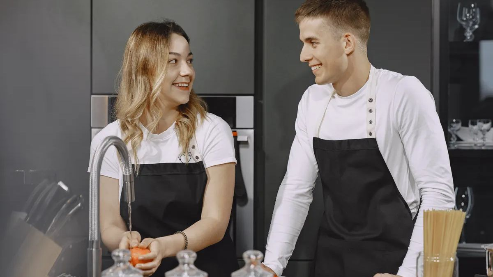

Couple Hobbies You'll Actually Enjoy Together
25 hobby ideas for two, from creative nights in to outdoor days out, with notes on why each one works.

Quick Takeaways
- Pick a hobby you both enjoy at your own pace instead of one that only one of you loves.
- Start small with one shared session a week, so the hobby stays fun and never feels like homework.
- Creative hobbies work well for two because you build something together and share the result.
- Active hobbies give you fresh air and shared wins, which beat another night on the couch.
- Food hobbies suit couples who love to taste, talk, and turn dinner into a small event.
- Keep the hobby light and switch it up when it stops feeling fun for both of you.
You both want couple hobbies to enjoy together, but every idea sounds like a chore. One of you suggests the gym, the other suggests painting, and the night ends with the same old show on the couch. That's the gap good couple hobbies fill, since the right hobby gives you a shared thing to look forward to instead of another dull evening. You need no big budget or rare talent. You need one small thing you both enjoy enough to repeat.
The trouble starts when a hobby fits only one of you. One person drags the other along, the dragged one checks the clock, and the hobby dies within a month. Most lists also push pricey gear or skills that take years to learn, which kills the fun fast. A hobby that works for two has to fit both of your energy levels, your free time, and your budget, or it won't last past the first try.
You'll find 25 couple hobbies to enjoy together below, sorted into five groups, from creative nights in to outdoor days out. Each one comes with a short note on why it works for two people, plus tips for picking the one that fits your life. Start with the group that sounds most like you, and try one idea this week.
Let's get into it.
Creative Hobbies to Try Together
Creative couple hobbies to enjoy together work well for two because you make something you can both point to at the end. A painted canvas or a lopsided clay mug gives you a shared story, not just a shared evening, which is the whole point of a hobby shared by two people. The best couple hobbies in this group need no talent to start, only a little patience and a willingness to look silly. Pick a craft that lets you both try, fail, and laugh about the result.
Keep the first session short and cheap. A small canvas, a starter clay kit, or a phone camera costs little and tells you fast if these couple hobbies to enjoy together fit. If one of you loves it and the other doesn't, try the next idea on the list instead of forcing it. The goal is a hobby you both reach for, not a chore one of you dreads. When you find the right craft, the time flies and the result feels like yours.
- Paint night at home. You each paint the same scene and laugh at how different they turn out.
- Pottery for beginners. Clay keeps your hands busy and gives you a wonky mug to keep.
- Photo walks with a theme. You hunt for one color or one shape, then compare your best shots.
- Scrapbooking your year. You sort photos and ticket stubs into a book you'll actually open again.
- Learning an instrument together. Short daily practice turns into duets you'll both be proud of.
A creative hobby also gives you a shared story to tell later. You'll laugh about the lopsided mug or the crooked canvas for weeks, and the joke becomes part of your history together. Keep the first pieces you make, even the ugly ones, since they mark the day you started something new as a pair.
Try one of these couple hobbies to enjoy together this weekend and see how it feels. The next group gets you moving, which suits couples who'd rather be out than sitting still.
Active Hobbies That Get You Moving
Active couple hobbies to enjoy together suit couples who feel restless after a long day at a desk. Moving together gives you fresh air, a shared goal, and a natural way to talk without staring at a screen. The best couple hobbies in this group match your fitness levels, so pick a pace the slower one enjoys and let the faster one slow down. You share the effort, and you share the win at the end.
Start with the easiest version of the activity. A flat trail beats a steep climb for a first ride, and a short morning walk beats a dawn run. If the activity leaves one of you sore and the other bored, change the route or the pace until both of you finish smiling. Small wins keep you coming back, and coming back is what turns an activity into a hobby.
- Morning walks with a podcast. You move, talk, and finish an episode side by side.
- Partner yoga at home. You stretch, balance, and laugh when one of you wobbles first.
- Beginner dance lessons. You learn the steps together, so nobody feels behind.
- Weekend bike rides. You pick a flat trail, pack snacks, and let the ride set the pace.
- Swimming laps side by side. You share the lane, the workout, and the tired happy feeling after.
An active hobby also builds a small ritual you both protect. A Saturday ride or a morning walk becomes the hour you count on, and skipping it feels like missing something real. Start with a short, easy version, and add a little more each week as your legs and lungs catch up. The habit matters more than the distance.
Pick one of these couple hobbies to enjoy together and try it twice before you judge it. The next group is for couples who think the best nights start in the kitchen.
Food Hobbies for Two
Food couple hobbies to enjoy together fit couples who love to taste, talk, and turn dinner into a small event. Cooking together gives you a job to share, a mess to laugh about, and a meal you made as a team. The best couple hobbies in this group need no chef skills, only a recipe you both like and a little time to enjoy it. Pick one dish, split the tasks, and let the kitchen do the rest.
Keep the recipes simple at first. When dinner turns into a date, build one with the ship name generator and see what it makes of your names. A one-pot meal or a basic loaf teaches you the rhythm of cooking together without stress. If a dish flops, order takeout and laugh about it, since the night was still yours. The point is the time you spent side by side, not a perfect plate. Once you find a favorite, cook it until it's yours.
- Cook a new recipe each week. You pick one dish, shop together, and taste the result as a team.
- Backyard pizza nights. You shape the dough, pick your toppings, and judge each other's slices.
- Baking bread from scratch. Slow rising dough gives you time to talk while the kitchen smells great.
- Coffee tasting at home. You brew two beans, compare notes, and find your house favorite.
- Grow herbs on the windowsill. You plant basil and mint, then cook with what you grew.
A food hobby also turns shopping into part of the fun. Picking produce together, arguing over which cheese to buy, and tasting samples along the way makes the trip feel like a date of its own, and that slow, unhurried browsing is what leisure time is for. Keep a short list of recipes you both love, and add one new dish each month. Your kitchen will slowly fill with meals that taste like your story.
Cook one new dish from these couple hobbies to enjoy together this week and taste the result as a team. The next group stays close to home, for the quiet evenings you both love.
At-Home Hobbies for Quiet Evenings
At-home couple hobbies to enjoy together suit couples who recharge best in their own space. A puzzle, a game, or a shared book gives you something to do together without leaving the couch or spending much. The best couple hobbies for quiet evenings feel calm, not lazy, since you're building a small ritual instead of just passing time. Pick one that fits your mood after a long day.
Set a small weekly slot for one of these couple hobbies to enjoy together, like Sunday nights after dinner. A fixed time turns a nice idea into a habit you both protect, and it gives you something to look forward to all week. Keep the phone in another room so the hobby gets your full attention. A quiet evening together, done on purpose, feels very different from a quiet evening by accident.
- Puzzle nights with tea. A big puzzle gives your hands work and your talk room to wander.
- Board game tournaments. You keep a running score across the month and crown a champion.
- Reading the same book. You read a chapter each night, then argue about the characters over tea.
- Movie nights with a theme. You pick a decade or a genre and rate each film together.
- Building a model kit. Small pieces and steady hands make a quiet evening feel shared.
An at-home hobby from these couple hobbies to enjoy together also needs a little ceremony to feel special. Light a candle, make a pot of tea, and put the phones in another room before you start, so the evening feels set apart from the rest of the week. A small ritual tells your brain that this hour belongs to the two of you, and the habit will stick far longer than a random night on the couch.
Claim one quiet evening a week for a hobby you both love. The last group heads outside, for couples who feel best under open sky.
Outdoor Hobbies to Enjoy Together
Outdoor couple hobbies to enjoy together fit couples who feel alive with fresh air and open space. A trail, a garden bed, or a calm lake gives you room to talk, room to breathe, and a view you earned together. The best couple hobbies outside need little gear to start, only good shoes, a little planning, and a free afternoon. Pick a spot close to home so the trip stays easy.
Check the weather, pack water and snacks, and keep the first outing short. A two-hour hike beats a full-day trek when you're still learning what you enjoy. If the day turns rainy, move the plan to next week instead of forcing it. The outdoors will still be there, and a good first trip makes the second one easy to plan.
- Gardening a small plot. You plant, water, and watch something grow because you both tended it.
- Hiking a new trail each month. You pick a fresh path, pack lunch, and earn the view together.
- Stargazing with a blanket. You lie back, spot constellations, and enjoy the quiet dark together.
- Picnics in the park. You pack simple food, find a shady spot, and let the afternoon stretch out.
- Kayaking on calm water. You paddle in sync, drift a little, and laugh when you splash each other.
An outdoor hobby from these couple hobbies to enjoy together also rewards you with stories you'll retell for years. The wrong turn that led to a hidden lake, the sudden rain that sent you laughing for cover, and the sunset you almost missed all become part of your shared history. Pack a small notebook and jot down one line after each trip, so the memories stay fresh long after the day ends.
Plan one outdoor outing this month and keep it simple. You've seen all five groups now, so let's wrap up with a plan for picking your hobby.
We've walked you through 25 couple hobbies to enjoy together across five groups, from creative nights in to outdoor days out. You now have a clear picture of how couple hobbies work best: one shared activity, a pace you both enjoy, and a small weekly slot to keep it alive. The hobby itself matters less than the time it gives you together.
Pick one of these couple hobbies to enjoy together from this list tonight, the one you both smiled at, and try it once this week. If you both enjoy it, put it on the calendar for next week too, and guard that slot like a date. If it falls flat, cross it off and try the next one. The right hobby will show itself fast.
If this list sparked an idea you'll try together, share it with a couple who keeps saying they need something to do. They'll thank you the next time they spend an evening doing something they both love, and start a new habit of their own.
Frequently Asked Questions
What are good hobbies for couples to do together?
How do couples pick a hobby they both like?
What hobbies can couples do at home?
What are cheap hobbies for couples?
How often should couples do a hobby together?
Keep reading
Baby Name Ideas Inspired by Couple Ship Names
Sweet baby names sparked by a couple blend.
BasicsWhat Is a Ship Name?
The meaning, the origin, and why fans love them.
Ideas100+ Cute Ship Names for Couples
A big list of blends with meanings and inspiration.
GuidesHow to Combine Two Names Creatively
Go beyond front-plus-back: creative ways to merge two names into something fresh.
Pop CultureIconic Movie Couple Ship Names
The famous pairings that gave us the format.
FictionHow to Create Ship Names for Fictional Characters
Name your favorite pairings the way fandoms do.